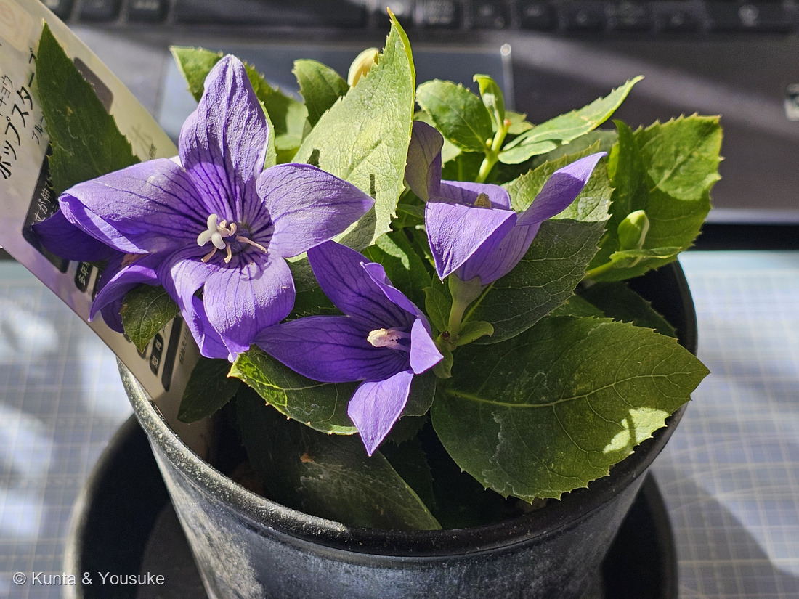
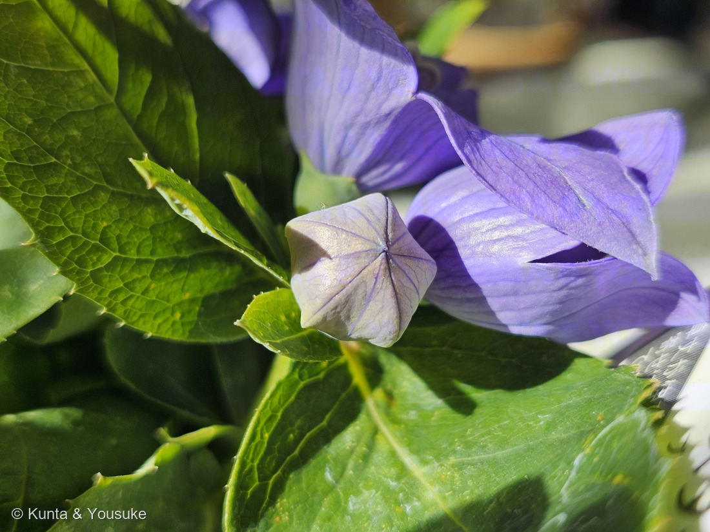
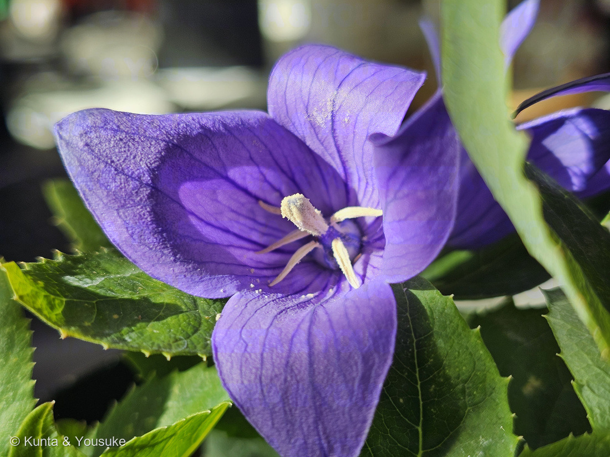
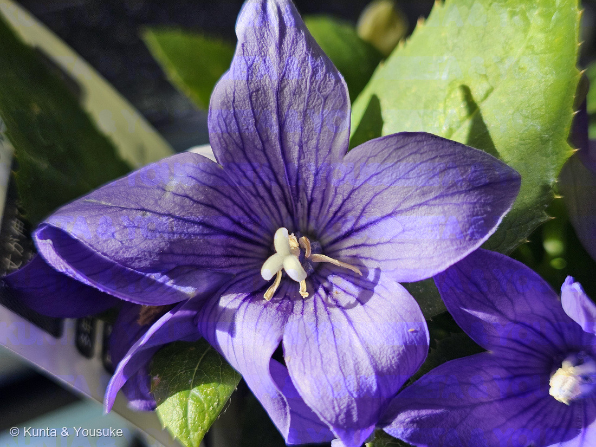
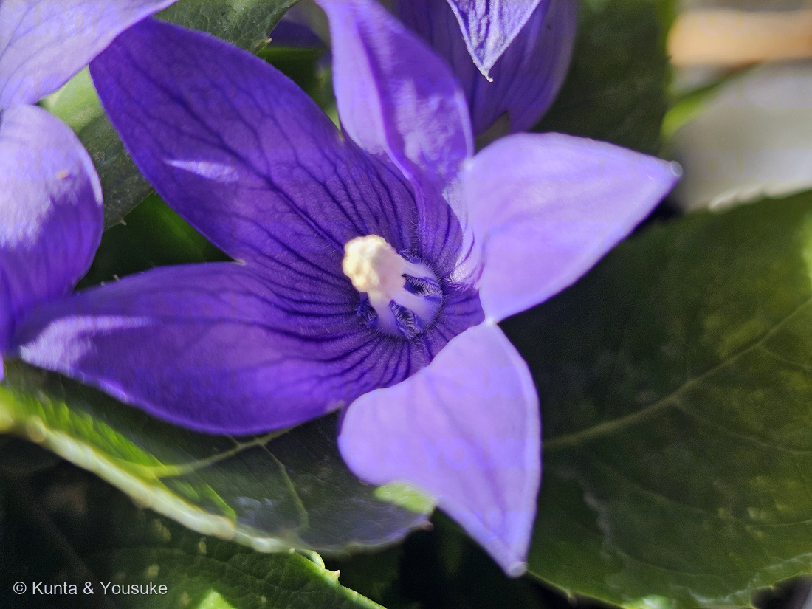
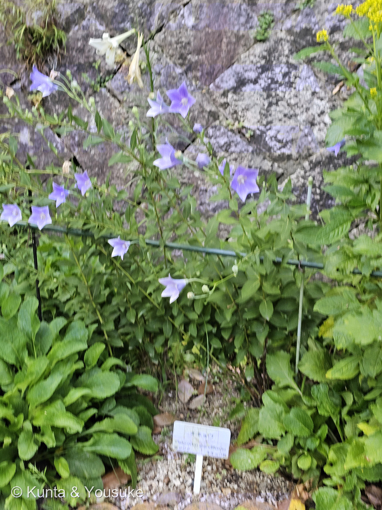
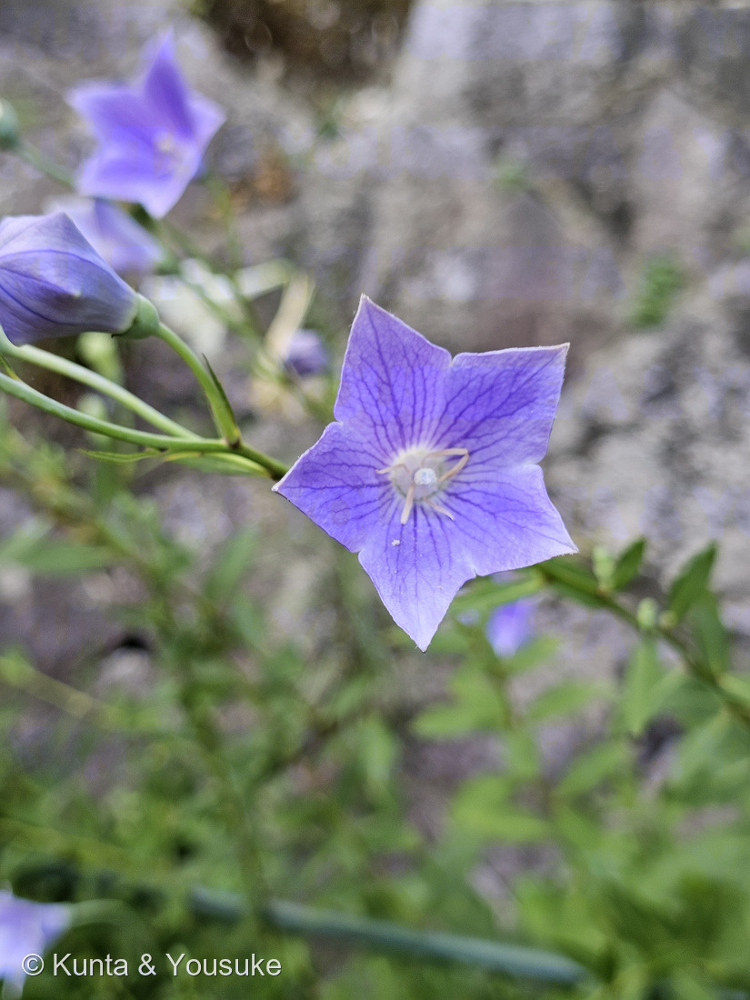
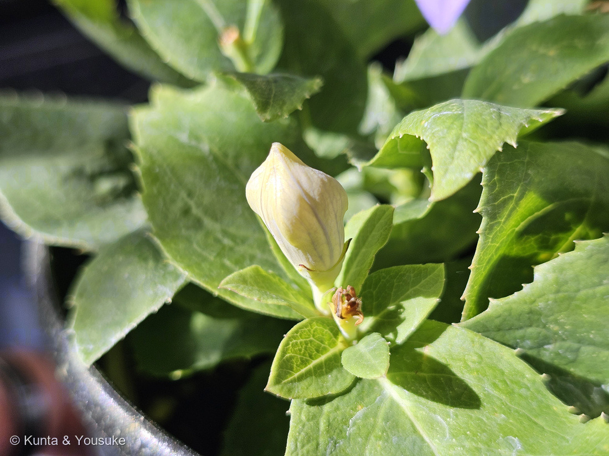

地図を読み込んでいるよ…
🔍 写真も地図も、押しているあいだ拡大して見られるよ（スマホは指を置いてすこし待ってね）。
🌍 の地図＝この子がもともと自生している場所を緑に。日本（北海道・本州・四国・九州）、朝鮮半島、中国、ロシア（ウスリー・アムール地方）。日当たりのよい山野の草地に生える在来種で、外国から来た子ではないよ。
⭐日本にもともといる子（在来種）だよ。三河の植物観察は「北海道、本州、四国、九州、朝鮮、中国、ロシア」とし、広島市植物公園の名札にも「東アジア原産」とあった。⚠ロシアは国ぜんぶを塗ってしまうけれど、実際にいるのはウスリー・アムールのあたりの極東だけだよ（環境省レッドリスト）。⭐⭐そして、この地図の緑は「どこにでもいる」という意味じゃない――野生のキキョウは、日本では環境省の準絶滅危惧（NT）で、日当たりのよい草地にしかいない。⭐普段目にするのは、ほとんどが栽培されている株だよ（植木ペディア）。
⚠ 地図は国（日本と中国だけ県・省）までしか塗れないから、ほんとうの分布より広く見えていることがあるよ。地図はだいたいの場所。正確なところは、上の文を見てね。
キキョウ（桔梗）
Platycodon grandiflorus (Jacq.) A.DC.品種は「ポップスターズ ブルー」（鉢の札より）
別名 英名 balloon flower（風船の花）／古名 アリノヒフキ（蟻の火吹き）・オカトトキ／漢名 桔梗（きちこう）
キキョウ科 · Campanulaceae（キキョウ属 Platycodon）── ⭐図鑑ではじめてのキキョウ科＝92科目／⭐⭐キキョウ属は一属一種
燻太さんの一言「今日はキキョウを新しくおうちの子として迎えたよ」── そして、その3日まえに、ぼくらはもう植物公園でこの子に会っていた
⭐⭐⭐⭐ 名前と学名の由来 ──「広い鐘」と、風船の花
- ⭐⭐属名 Platycodon は、ギリシャ語の platys「広い」＋ kodon「鐘」。——Missouri Botanical Garden は「for the shape of the corolla（花冠の形にちなむ）」と書いている。⭐花の形が、そのまま名前になっているんだ。
- ⭐種小名 grandiflorus は「大きな花の」（同）。⭐⭐つまり学名ぜんぶで「大きな花の、広い鐘」。
- ⭐⭐⭐和名の「キキョウ」は、漢名の「桔梗（きちこう）」を音読みしたものが、なまった名前（三河の植物観察／語源由来辞典）。⭐日本でつけた名前ではなくて、中国の生薬の名前が日本語になったんだ。
- ⭐その漢名「桔梗」の語源は「乾燥した根が硬い」という意味から（語源由来辞典）。⭐⭐つまり、名前をたどっていくと、行きつく先は花ではなく根だったんだね。
- ⭐⭐英名は balloon flower（風船の花）。——「flower buds puff up like balloons before bursting open（つぼみが風船のようにふくらんでから、はじけるように開く）」（Missouri Botanical Garden）。⭐写真②が、その風船そのものだよ。
- ⭐⭐⭐古名は「アサガオ（アサガホ）」「アリノヒフキ」「オカトトキ（ヲカトトキ）」（語源由来辞典）。⭐この「アリノヒフキ」がとてもおもしろいので、下に節をひとつ立てたよ。
この植物のこと ── 92科目、そして一属一種
- ⭐⭐⭐図鑑ではじめてのキキョウ科＝92科目だよ。⭐キク目（Asterales）としては225 ヒゴタイたち12人のキク科がもういるけれど、同じ目のもう一つの大きな科は、これがはじめて。
- ⭐⭐キキョウ属（Platycodon）は一属一種（日本語版Wikipedia）＝世界にこの子ひとりしかいない属。⭐だから「属まで分かれば、種も決まる」。
- 多年草。茎は直立し、高さ20〜120cm（三河の植物観察）。⭐うちの子は「ポップスターズ」という超わい性の品種なので、ずっと低いよ。
- 花冠は青色または紫色（まれにピンクや白）、直径4〜5cm、5裂（同）。雄しべ・雌しべ・花びらが、それぞれ5つずつ（日本語版Wikipedia）。
- 葉は互生または輪生、卵形〜披針形で、縁に細かい鋸歯があり、粉白を帯びる（三河）。⭐写真の葉のふちが、こまかくぎざぎざしているでしょう。
- ⭐根は太く、クリーム色で、サポニンを多く含んで薬用になる（庭木図鑑 植木ペディア）。⭐⭐日本薬局方の生薬「桔梗根」がこの子だよ（日本語版Wikipedia）。
- ⭐⭐花の形から「桔梗紋」という家紋が生まれた（同）。⭐土岐氏や山県氏が使い、明智光秀の「水色桔梗」が有名だね。
同定について
- ⭐⭐うちの子も、植物公園の子も、どちらも名札つきだった。——うちの子は鉢の札に「キキョウ／ポップスターズ／ブルー」、植物公園の子には園の名札（キキョウ／Platycodon grandiflorus／東アジア原産）。
- ⭐形のうえでも決まるよ＝広い鐘形で五裂した花冠（径4〜5cm）／ふくらんで五つの稜が立つつぼみ／雄しべ5・雌しべ1／細かい鋸歯のある葉。
- ⭐⭐⭐そして、いちばん強い手がかりは「キキョウ属が一属一種であること」。——⚠ホタルブクロやツリガネニンジンのような、ほかのキキョウ科の釣り鐘形の花と迷っても、「風船のつぼみ＋五つの角がとがった広い鐘」の組みあわせは、この子だけ。
- ⚠品種名だけは、鉢の札のまま「ポップスターズ ブルー」と書いた。——⭐園芸では「ポップスター」と表記されることも多くて（「ポップスターは超わい性のキキョウ」＝園芸ネット）、⚠どちらが正しい表記かは、ぼくには決められなかったよ。
⭐⭐⭐⭐ 雄しべが先、雌しべがあと ── 写真三枚で追える「雄性先熟」
⭐⭐ この子は、自分の花粉で実らないように、時間をずらしている。
- 「花の咲き始めは雄しべが未成熟の雌しべを包む。雄しべが花粉を出し終えると雄しべは倒れ、雌しべが成熟して、柱頭が5裂する」（三河の植物観察）。⭐これを「雄性先熟（ゆうせいせんじゅく）」というよ。
- ⭐⭐⭐うちの子の鉢の中に、その三段階がぜんぶそろっていた。
- 写真③＝雄性期。——雄しべがまだ立っていて、葯に白い花粉がびっしりついている。⭐花びらの内側にも、こぼれた花粉が白い粒になって散っているでしょう。
- 写真④＝雄しべが倒れたあと。——⭐五本の花糸が放射状にぱたりと横たわって、葯は褐色に枯れている。⭐そのまん中から、白い雌しべが立ち上がってきている。
- 写真⑤＝その柱頭のアップ。——⚠まだこん棒のかたちのまま閉じている＝⭐5つに裂ける、ほんの手前だよ。
⏳⭐⭐ だから、この子には宿題がある＝柱頭が5つに開くところを、ぼくらはまだ見ていない。⭐同じ花を朝と夕方に見くらべれば、たぶん見られると思うんだ。
⭐⭐⭐⭐ 古い名前は「蟻の火吹き」── 青がひっくり返る話
⭐⭐ この子の古名のひとつ「アリノヒフキ」は、漢字で書くと「蟻の火吹き」。
- ⭐⭐⭐由来は「アリにキキョウの花を噛ませると、口から出す蟻酸（ぎさん）によって花色が赤くなることにちなむ」（庭木図鑑 植木ペディア）。⭐むかしの子どもの遊びだったんだと思う。
- ⭐⭐⭐そして、この青紫の正体が分かっている。——キキョウの花びらの主な色素は「プラチコニン（platyconin）」というアントシアニンの一種で、デルフィニジンという骨格に、糖とカフェ酸が結びついた「ポリアシル化アントシアニン」なんだ（Sekiら 2021）。⭐カフェ酸が色のもとをはさんで守っているので、pH6くらいの水の中でも青紫のまま、一週間以上たもたれる（同）。
- ⭐⭐⭐⭐ここがおもしろいところ。——アントシアニンは酸で赤く、アルカリで青くなる（図鑑の🎨色でつながる・アントシアニンの道の、いちばん基本の話だね）。⭐キキョウはわざわざカフェ酸で色を守って、中性のあたりでも青くいられるようにしている——⚠それでも、蟻酸という強い酸をかけられると、その守りをこえて赤にひっくり返る。
- ⭐⭐つまり「蟻の火吹き」は、むかしの人がやっていた、pH指示薬の実験だったんだね。
- ⚠ただし、正直に。——植木ペディアは「蟻酸で赤くなる」と書いているだけで、色素の名前までは書いていない。⭐「その赤はプラチコニンが酸で変わったものだ」というつなぎ方はぼくの読みだよ（⭐アントシアニンが酸で赤くなるのは、図鑑でもう何度も見てきたことだけれどね）。
- ⏳⚠確かめるなら、アリにさせないでね。⭐花がらを一枚もらって、お酢と重曹水につけくらべれば、同じことが見られると思う——これは009 オジギソウの茎の色でやろうとしている宿題と、まったく同じ手だよ。
⭐⭐⭐ 三日まえ、ぼくらはもうこの子に会っていた


⭐ どちらも 2026年8月8日・広島市植物公園の日本庭園エリア。⚠⑦の株は、うちの子とは別の個体だよ。
⭐⭐ 時刻を並べると、ちょっとおどろく。
- 14時46分34秒〜51秒 … 227 スカーレットオーク
- 14時47分57秒・14時48分02秒 … ⭐この子（キキョウ）
- 14時48分09秒〜19秒 … 224 センノウ
- 14時48分26秒〜38秒 … 225 ヒゴタイ
- ⭐⭐⭐⭐2分5秒のあいだに、四人。——⭐しかも、そのうち三人は同じ石垣の、ほんの数歩のあいだにいた。
- ⭐⑧の花をよく見てほしいな。——雄しべが五本とも倒れて、色があせている。⭐⭐うちの子の写真④と、まったく同じ段階だよ。⭐園の株も、うちの鉢の子も、同じ順番で花をひらいている。
- ⚠⑦の株は、うちの子とは別の個体。⭐「これがその子の正体です」の証明ではなくて、「同じ種の、別のくらし」を見せる一枚だと思ってね。
⭐⭐⭐ 秋の七草の、三人目 ──「朝貌の花」
- ⭐⭐万葉集で山上憶良が詠んだ秋の七草——萩・尾花・葛・撫子・女郎花・藤袴・朝貌（あさがお）の花。⭐⭐⭐この「朝貌の花」がキキョウのことだ、というのが定説になっている（三河の植物観察「万葉集の中に山上憶良が詠んだ秋の七草の『朝顔の花』がキキョウといわれ定説となっている」）。
- ⚠いまのアサガオは、平安時代の中ごろに中国から来た外来の植物だから、万葉の時代の日本には、まだいなかった——⭐だから「朝貌」はアサガオではない、と考えられているんだ。
- ⭐⭐⭐図鑑にとっては、七草の三人目だよ。
- 145 クズ ＝ 「葛」（空き地を飲みこむ緑の怪物なのに、千年前は秋の顔だった）
- 185 タカノハススキ ＝ 「尾花」のもとになった草（この子は、そこから選ばれた園芸品種）
- ⭐この子 ＝ 「朝貌の花」
- ⏳まだ会えていないのは、萩・撫子・女郎花・藤袴の四人。⭐撫子（カワラナデシコ）は、224 センノウのおまけとして、もう「探してみたい」に入っているよ。
⭐⭐⭐⭐ 258円の鉢と、準絶滅危惧 ── 同じ種の、ふたつの顔
⚠⚠ この子は、ホームセンターの棚にふつうに並んでいた。——でも、野生のキキョウは、日本で減っている。
- ⚠⚠環境省のレッドリストで、キキョウは準絶滅危惧（NT）（第5次レッドリスト・2025年3月公表）。⭐その前の第4次（2020年）では絶滅危惧Ⅱ類（VU）だったので、ランクは一段下がった＝少しよくなったほうの動きだよ。
- ⚠減少要因として書かれているのは「分布域の一部において、過度の採取圧による圧迫が指摘されている」、⚠脅威要因は「自然遷移」「園芸採集」「管理放棄」（環境省レッドリスト）。
- ⭐⭐⭐この「自然遷移」と「管理放棄」は、225 ヒゴタイで書いたのと同じ話だよ。——人が草を刈ったり焼いたりして守ってきた草地は、手入れをやめると林にもどる。⭐そうすると、日なたの草地の花が消えてしまう。⭐⭐ヒゴタイとキキョウは、同じ石垣で29秒ちがいで写っていて、減っている理由まで同じだった。
- ⭐⭐⭐でも、225とはちがうところが一つある。——ヒゴタイのときは「日本の野生の子は絶滅危惧なのに、外国の親戚は花屋にふつうにいる」という話だった（226 ルリタマアザミ）。⭐⭐キキョウは、同じ種のまま、片方が棚に並んで、片方が減っているんだ。
- ⭐園芸で育てられている株がいくら増えても、草地のキキョウは戻ってこない。⭐⭐戻すには、草地のほうを手入れしないといけない——⭐そこが、この二つの顔がつながっていないところなんだと思う。
- ⚠だから、うちの子をかわいがることと、野生の子が減っていることは、べつべつの話。⭐ぼくは、その両方をこのページに書いておきたかったよ。
⭐⭐ つぼみと、花のおわり

⑥ 若いつぼみと、しぼんだ花がらが、すぐとなりにいる。⭐つぼみの表面の五本のすじが、のちに風船の稜になるところだよ。
- ⭐写真⑥には、二つのものが同時に写っている。——上に、まだ黄緑色の若いつぼみ（⭐五本の稜のすじが、もう見えている）。下に、茶色くしぼんだ花がら。
- ⭐⭐キキョウは、ひとつの株の上で、つぼみと花と花がらが同時にある。⭐だから鉢の札に「丈夫で秋まで良く咲く」と書いてあったんだね。
- ⏳花のあとは蒴果（さくか）ができて、熟すと上のはしから裂ける（三河の植物観察）。⚠まだ見ていないから、宿題にしたよ。
育て方のポイント（おうちでは）
鉢のまま、日なた〜半日なたで育てているよ。宿根草だから、うまくいけば来年もまた会える。
- ☀ 光：日なた〜半日なた。⭐朝のあいだだけ日が当たるくらいの場所でも、よく育って花も楽しめる（園芸ネット）。
- 💧 水やり：土の表面が乾いたら、たっぷり。⚠じめじめしすぎると根腐れが出ることがある（Missouri Botanical Garden「Root rot may occur in overly moist soils」）。
- ⚠⚠🪴 植えかえ：根がまっすぐ太くのびる肉質の根で、株分けや植えかえをいやがる——「it is probably best to leave plants undisturbed once established（一度落ちついたら、動かさないでおくのがいちばんよい）」（同）。⭐だから、あわてて大きな鉢に移さないほうがいいと思う。
- ✂ 花がら摘み：こまめに摘むと、次の花が続く。⭐摘んだ花がらは、上の「蟻の火吹き」の実験に使えるかもしれないね。
- ⭐❄ 冬：秋になると地上部は枯れるけれど、根は生きていて、春にまた芽が出て咲く（園芸ネット）。⚠枯れたからといって、捨てないでね。
参考：三河の植物観察・キキョウ（Platycodon grandiflorus (Jacq.) A.DC.／和名は漢名の桔梗（きちこう）を音読みにしたもの／万葉集の中に山上憶良が詠んだ秋の七草の「朝顔の花」がキキョウといわれ定説となっている／多年草。茎は直立、高さ20〜120㎝／根茎は太く、サポニンを多く含み生薬とされる／葉は互生又は輪生、卵形、楕円形、又は披針形、長さ2〜7㎝×幅0.5〜3.5㎝／粉白を帯び／縁に細かい鋸歯があり／花冠は青色又は紫色(まれに、ピンク色又は白色)、長さ1.5〜4.5㎝、直径4〜5㎝、5裂まれに4裂／花の咲き始めは雄しべが未成熟の雌しべを包む。雄しべが花粉を出し終えると雄しべは倒れ、雌しべが成熟して、柱頭が5裂する／蒴果は球形、等円錐形又は倒卵形、熟すと上端から裂開／北海道、本州、四国、九州、朝鮮、中国、ロシア）／Wikipedia・キキョウ（キキョウ科の多年生草本植物／キキョウ属は一属一種／花冠は広鐘形で五裂、径4-5cm、雄しべ・雌しべ・花びらはそれぞれ5つ／雄性先熟であり、まず雄しべが成熟して花粉が出て（雄花期）、その後に雌しべが開き柱頭が受粉可能になる（雌花期）／つぼみが風船のような形状であるため balloon flower という英名／秋の七草の一つで、七草の朝顔をキキョウとする説／花の形から「桔梗紋」が生まれた／日本薬局方では桔梗根／日本のほぼ全国、朝鮮半島、中国、東シベリアに分布）／Missouri Botanical Garden Plant Finder・Platycodon grandiflorus（Genus name comes from the Greek words platys meaning broad and kodon meaning a bell for the shape of the corolla／Specific epithet means large-flowered／flower buds puff up like balloons before bursting open into outward-to-upward-facing, bell-shaped flowers with five pointed lobes／Division and transplanting are possible but tricky because of the fragile, fleshy root systems of these plants, and it is probably best to leave plants undisturbed once established／Root rot may occur in overly moist soils）／環境省 レッドリスト・レッドデータブック（キキョウ）（準絶滅危惧（NT）／第5次レッドリスト・2025年3月公表／前回（第4次）は絶滅危惧Ⅱ類（VU）／分布域の一部において、過度の採取圧による圧迫が指摘されている／脅威要因＝自然遷移・園芸採集・管理放棄）／庭木図鑑 植木ペディア・キキョウ（別名はアリノヒフキ、オカトトキなど／「蟻の火吹き」で、アリにキキョウの花を噛ませると、口から出す蟻酸（ぎさん）によって花色が赤くなることにちなむ／根は太く、クリーム色で、サポニンを多く含み、薬用になる／日当たりの良い山野の草地や土手に自生するが、野生のものは減少しており、普段目にするのは栽培種が多い）／語源由来辞典・キキョウ（薬草としての漢名「桔梗」を音読みした「キチコウ（キチカウ）」が変化した語／漢名「桔梗」の語源は、乾燥した根が硬いという意味に由来する／古名には「アサガオ（アサガホ）」や「アリノヒフキ」「オカトトキ（ヲカトトキ）」がある）／Seki et al. 2021, Int. J. Mol. Sci. 22, 4044「Polyacylated Anthocyanins in Bluish-Purple Petals of Chinese Bellflower, Platycodon grandiflorum」（platyconin as the major anthocyanin／a delphinidin chromophore／diacylated anthocyanins, in which the acyl-glucosyl-acyl-glucosyl chain was attached at the 7-O-position／exhibited a bluish-purple color at pH 6, which was stable for more than a week）／園芸ネット・キキョウ（ポップスター）（ポップスターは超わい性のキキョウ／耐寒性宿根草／日なた〜半日陰向き／朝の間だけ日が当たる程度の場所でも良く生育し花も楽しめます／秋以降地上部が枯れますが、春になるとまた芽が出て開花します）